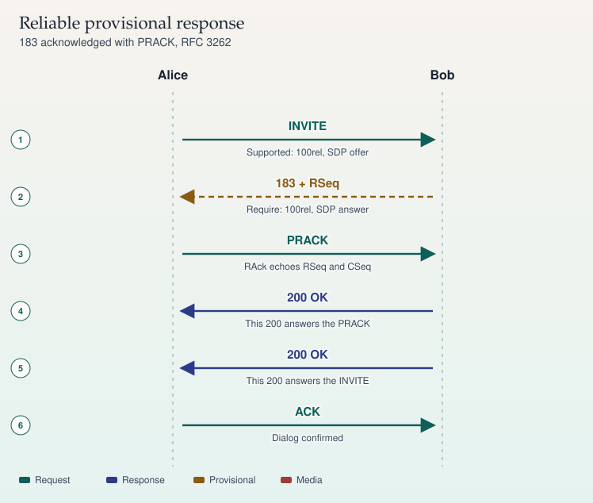

RFC 3262
PRACK
Reliable provisional responses need PRACK. A lost 183 otherwise never settles the early offer.
- INVITE — Supported or Require includes 100rel.
- 183 — RSeq is set. The 183 is retransmitted until PRACK.
- PRACK — RAck names the RSeq and the INVITE CSeq.
- 200 — That 200 is for the PRACK, not the call.
Require: 100rel on a hop that cannot send PRACK fails the call. Match the requirement on both sides of a B2BUA before you change codecs.
Sources
Study card carried forward
SIP · RFC 3262
Reliable provisional responses
Ordinary 1xx responses are not reliable. PRACK is the acknowledgement that makes a chosen provisional response reliable. The option tag is 100rel.

On a phone, swipe a wide ladder sideways. The steps below repeat the same sequence.
Sequence
- INVITE — Alice to Bob. Supported: 100rel, SDP offer
- 183 + RSeq — Bob to Alice. Require: 100rel, SDP answer
- PRACK — Alice to Bob. RAck echoes RSeq and CSeq
- 200 OK — Bob to Alice. This 200 answers the PRACK
- 200 OK — Bob to Alice. This 200 answers the INVITE
- ACK — Alice to Bob. Dialog confirmed
The handshake
Alice advertises support with Supported: 100rel. If she requires the feature, she sends Require: 100rel and a peer that does not support it should reject the INVITE.
Bob sends 183 with Require: 100rel and a RSeq number. He retransmits that 183 until a matching PRACK arrives. Alice's PRACK carries RAck set to the RSeq, the CSeq number, and the method, which is INVITE. Bob answers the PRACK with its own 200 OK. That 200 is not the answer to the INVITE. The INVITE is still outstanding until a later 200 OK, which Alice then ACKs in the normal way.
Offer and answer
On this ladder the offer was in the INVITE and the answer is in the reliable 183, which is what you want when early media must start before answer. Other legal shapes exist: a reliable 183 can carry the offer when the INVITE had none, and the PRACK can carry the answer. Do not open a new offer until the previous one has an answer (RFC 6337 discusses offer/answer usage in SIP).
Sources
- RFC 3262, reliability of provisional responses (PRACK)
- RFC 6337, usage of the offer/answer model with SIP
- RFC 3264, the offer/answer model itself